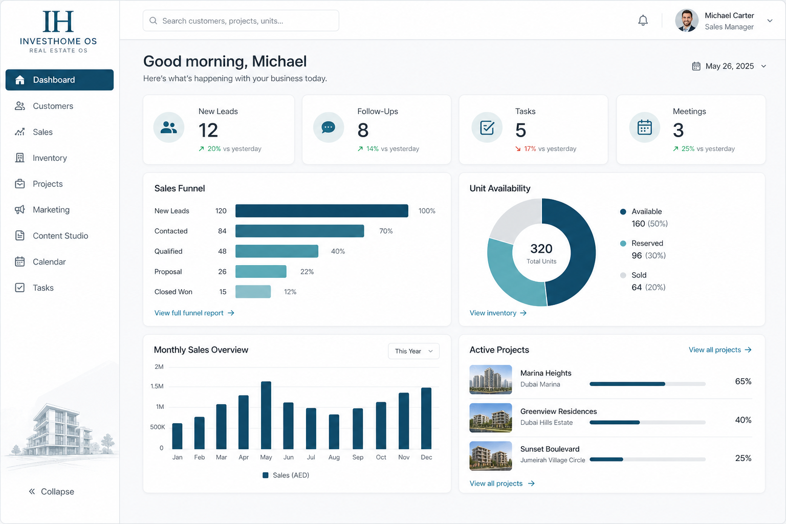

One calm command surface: today strip, sales funnel, unit availability, projects, marketing production, and follow-ups — without BI explorer noise.
Backend still powers reports and BI; the default Dashboard hides that complexity and routes people into today’s work.
Sidebar uses the proposed primary nav. Content prioritizes personal today metrics, then commercial glance widgets with explicit empty states and drill targets.
Light, spacious command center. FunnelChart + DonutChart are intentional UXR1 sales-UX exceptions.

Primary mobile job: finish today’s queue — not recreate the desktop dashboard.
Dashboard is a router to work — not a second BI product. Each widget has one drill destination.
| Action | Where | Outcome |
|---|---|---|
| Open follow-up | Follow-ups list | Customer or opportunity |
| Drill Sales Funnel | Funnel widget | /dashboard/sales |
| Drill Unit Availability | Donut widget | /dashboard/inventory |
| Open project | Active Projects | /dashboard/projects/[id] |
| Plan day | Empty Today CTA | Calendar / Tasks |
Current staff land in crowded rails and analytics surfaces that require training. The proposed Dashboard answers “what needs me today?” with sales-native visuals and honest empty states.
Visual package only. No routes, components, or APIs changed. Approve or request changes before any implementation.